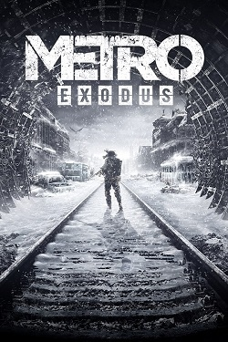
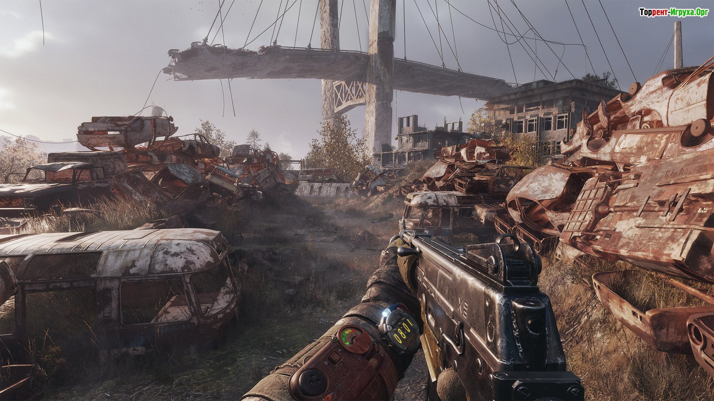
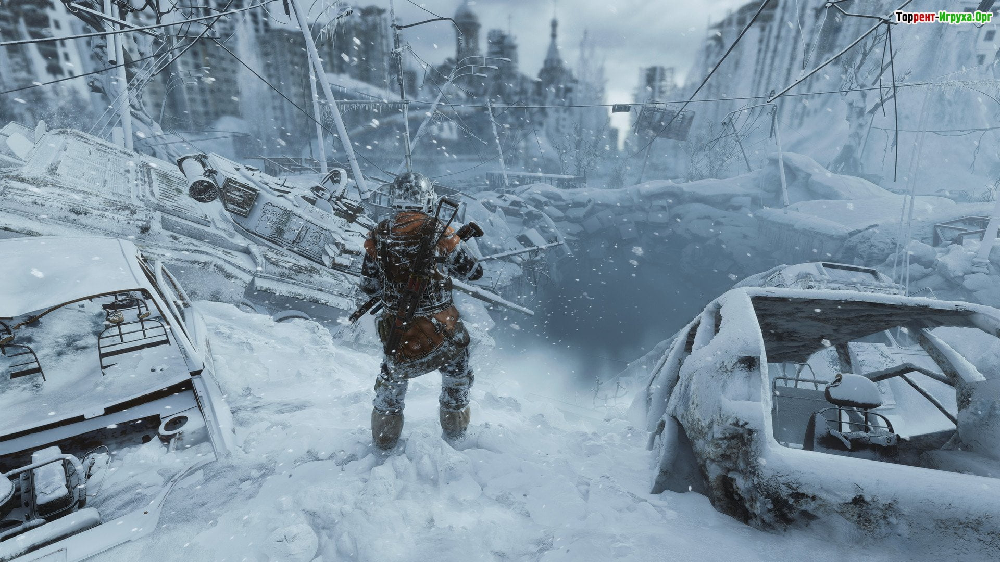
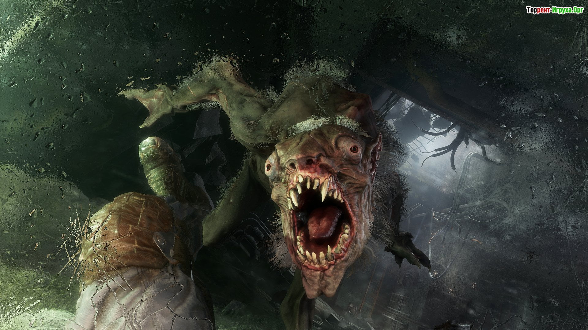
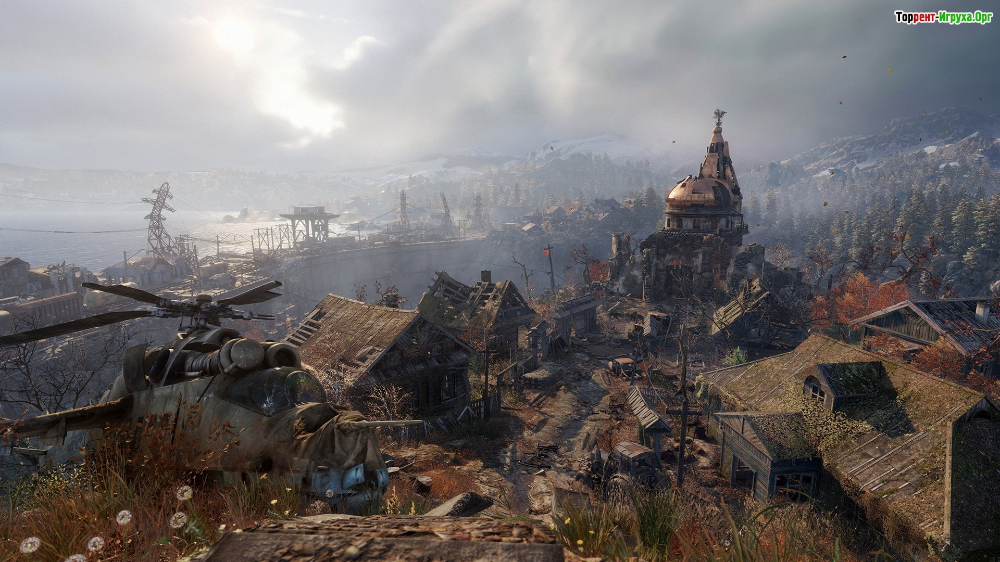

Metro Exodus

Дата выпуска: 15 февраля 2019
Жанр: Экшены
Разработчик: 4A Games
Издатель: Deep Silver
Платформа: PC
Тип издания: RePack
Язык интерфейса: Русский, Английский
Язык озвучки: Русский, Английский
Таблетка: Не требуется (DRM-Free)
Системные требования:
ОС: Windows, 7, 8, 10 (64-bit only)
Процессор: Intel Core i5-4440 or AMD FX-6300 @ 3.5 GHz
Оперативная память: 8 GB ОЗУ
Видеокарта: GeForce GTX 1050 / AMD Radeon HD 7870
Место на диске: 100 GB
Установить Metro Exodus
Инструкция по установке:
1. Скачайте установщик .torrent
2. Запустите файл установки в любом удобном Torrent-Клиенте
3. Установите .exe файл и запустите его
4. Следуйте инструкции внутри установщика
Размер файла: 67.13 GB
Описание игры
В 2018 году прибудет третья компьютерная игра, разработанная на основе вселенной постапокалиптических романов Дмитрия Глуховского «Метро». Новинка, получившая название Metro Exodus, что значит «Метро Исход», была официально анонсирована в рамках прошедшей 11 июня пресс-конференции Microsoft, предшествовавшей выставке E3 2017. Metro Exodus продолжает события двух предыдущих игр, Metro 2033 и Metro Last Light, ее разработкой и издательством занимаются те же компании — 4A Games и Deep Silver.
Итак, в Metro Exodus геймеру в роли Артема предстоит много путешествовать по поверхности. А поверхность — это величественные пейзажи, пусть и не такие невинные, какой была природа много тысячелетий назад, и не такие индустриальные, какой была Россия до ядерной войны, заставившей немногочисленные группы оставшихся в живых людей спуститься в метрополитен с целью выжить. Какими бы они ни были, эти бескрайние просторы не могут не впечатлять.
Скриншоты из игры
 |
 |
 |
 |